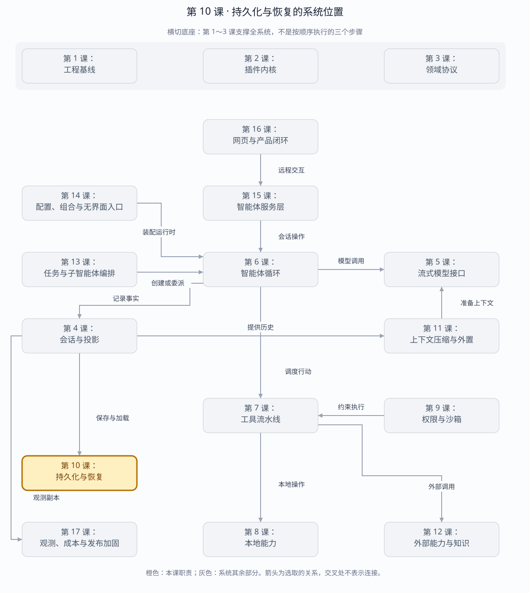

第 10 课：JSONL 持久化、恢复与 Fork
恢复源是持久化 Session Log，不是 OTel、UI Store 或正在运行的 Agent 对象。本课把“提交了什么”和“什么允许修复”做成字节级协议。
章节概览（可选）：三框架职责摘要
本章对比：DeepSeek Harness / DeepAgents / OpenHands
口径：DeepSeek 依据本地原仓库（99f6f02fecdb），不是 harness-lab；deepagent 按 LangChain DeepAgents 理解；OpenHands 对比当前 Software Agent SDK，不混用旧 V0。在线资料核对于 2026-08-28，描述文档能力，不代表已在本实验室安装或测试。没有依据的同名能力不强行等同。
三者的关键区别：恢复源分别是持久会话日志、图检查点、会话状态加事件文件；三者都不从观测后端恢复执行。（基于上述依据的归纳）
本章在全系统中的位置
位于会话状态下方的耐久边界，在进程重启后反向供给新运行时。
下面是本课程的概念地图，不是某框架的逐包调用图，也不表示实验室已默认装配全部能力。三套框架的实际对应关系见上方横向对比表。
全系统定位 · 橙色高亮第 10 课
打开大图 · Mermaid 图源
| 上游与输入 | 已接受的会话记录与显式持久化屏障；恢复时输入会话身份。 |
|---|
| 下游与输出 | 持久文件或数据库记录；重启后重建历史、状态和继续执行的起点。 |
|---|
| 不归本章负责 | 恢复会话不等于恢复外部进程；结果未知的副作用不能靠重新调用工具来猜。 |
|---|
| 放进具体场景 | 运行测试时崩溃，重启先加载会话并识别未闭合调用，再决定如何处理；不能把遥测平台的记录当作本地提交成功。 |
|---|
接着看下方「可视化图解」：局部模块图解释职责，时序图解释一次调用，分支图解释异常与边界。
本课导览
| 包含内容 | 带校验和的 JSONL、刷盘、冷恢复、崩溃尾部修复、悬空事件闭合和会话分叉。 |
|---|
| 涉及模块 | JsonlSessionStore、Session、恢复检查器、事件修复器、分叉逻辑。 |
|---|
| 白话解释 | 把会话写成一本逐行落盘的账本；程序崩溃后先验账、补齐可证明的结尾，再让智能体接着工作。 |
|---|
| 解决的问题 | 保证进程重启后不会丢失已提交事实，也不会猜测或重复执行结果未知的外部副作用。 |
|---|
点击下面的概念名称，可直达该概念的三框架实现、区别与依据。原有能力清单、示例和验收描述面向 harness-lab 教学实现；不要将其直接当作上游框架能力声明。
完整能力清单
| 能力 | 具体覆盖 | 恢复原则 |
|---|
| 会话头 | 持久化会话标识、格式、版本、工作目录和可选父会话谱系。 | 身份或版本不匹配时拒绝恢复。 |
| 逐事件存储 | 每个事件独占一行，保存连续序号、时间、数据和校验和。 | 完整坏行视为已提交损坏，绝不猜测。 |
| 写后队列与刷盘 | 追加进入串行队列，flush 等待写入并调用文件同步。 | 刷盘是进程骤停前的持久化屏障。 |
| 崩溃尾部修复 | 仅截断最后一个换行之后未提交的半行，并持久化修复结果。 | 有换行的完整记录不能自动删除。 |
| 生命周期修复 | 为悬空工具调用补未知结果，再补步骤结束和中断轮次结束。 | 结果未知的外部副作用不得自动重试。 |
| 冷恢复 | 校验记录、修复边界、重建 Session 和全部投影，并从下一轮编号继续。 | 恢复源只有持久化事件日志。 |
| 会话分叉 | 按指定序号复制前缀，在中间边界补闭合事件，并写入父谱系。 | 分叉后两个日志独立增长。 |
| 路径防护 | 会话标识编码为根目录内单一文件名，检查重复标识。 | 危险标识不能逃逸目录或覆盖已有会话。 |
主概念深挖：可证明的崩溃恢复
持久化层位于 Session 内存账本的下游、宿主恢复与 Agent 续跑的上游；它只恢复磁盘上可以通过字节和协议证明的事实。
Session.append(event)（输入）
│ 串行 write-behind
▼
Header + JSONL + checksum ── flush/fsync ─► 磁盘事实
│ 冷启动
▼
字节检查 ─► 半行截断 ─► 生命周期补闭合 ─► Session
│
▼
投影重建 + Agent 续跑（输出）
| 背景与目的 | 进程可能在任意字节位置死亡；恢复若猜测未提交数据或重试未知副作用，会把一次崩溃变成重复破坏。 |
|---|
| 输入与输出 | 写入输入是会话头和连续事件；恢复输入是原始文件字节，输出是校验后的 Session、修复事件和下一轮编号。 |
|---|
| 适用场景 | 服务重启、机器掉电、CLI 跨进程继续、历史分叉和损坏诊断。 |
|---|
| 底层组件 | JSONL、校验和、换行提交标记、串行写后队列、fsync、序号校验、生命周期修复器和安全文件名编码。 |
|---|
| 核心逻辑 | 换行定义记录提交边界；完整记录必须逐条通过校验和与序号检查；仅未换行尾部可截断；悬空工具写未知结果而非重试。 |
|---|
| 权衡 | 每行校验和与频繁刷盘增加 I/O 成本，却能区分未提交尾部和已提交损坏，并提供明确耐久边界。 |
|---|
| 方案对比 | 数据库提供事务与索引但引入服务和迁移复杂度；JSONL 易检查、易教学、适合单会话顺序写，规模增长后可换后端而保留协议。 |
|---|
场景穷举
冷恢复读取文件
├─ 全部行完整且校验通过 → 直接重建
├─ 最后一段无换行 → 截断到最后提交边界
├─ 完整行 checksum 错 → 拒绝恢复
├─ seq 缺口/重复 → 拒绝恢复
├─ open tool call → UNKNOWN result + closers
├─ open step/turn → interrupted closers
└─ fork at seq → 补边界 + parent lineage + 独立日志
| 崩溃位置 | 磁盘证据 | 恢复决定 |
|---|
| 写入前 | 没有新字节。 | 事件未提交，不存在。 |
| 写到半行 | 末尾无换行。 | 安全截断半行。 |
| 完整行后、fsync 前 | 可能存在也可能随掉电丢失。 | 以实际可读完整行作为事实；flush 才承诺耐久。 |
| 工具副作用后、result 前 | 只有 tool/call。 | 写 UNKNOWN，要求检查外部状态。 |
| 修复事件写到一半 | 修复尾部也遵循换行边界。 | 下次恢复再次确定性生成相同 closers。 |
| 历史中间损坏 | 完整坏行或序号缺口。 | 停止，绝不自动跨过。 |
多方案对比
| 方案 | 事务能力 | 可检查性 | 适用规模 |
|---|
| 覆盖写 JSON 快照 | 需临时文件+重命名。 | 当前状态直观，历史丢失。 | 小型无审计状态。 |
| 校验 JSONL | 单记录提交，顺序追加。 | 文本可检查，修复边界明确。 | 单会话顺序写和教学实现。 |
| SQLite | 强事务、索引和并发读。 | 需查询工具。 | 大量会话和复杂检索。 |
| 远程事件库 | 分布式耐久与复制。 | 运维复杂。 | 多节点生产系统。 |
关键设计反问
- 为什么换行能当提交标志？
- 写入器承诺每条记录只有完整编码后才追加换行；因此无换行尾部一定不是已提交记录，而完整行必须接受校验。
- 为什么不能自动重跑悬空工具？
- 外部写操作可能已经成功，只是 result 未落盘；自动重跑可能重复付款、删除或覆盖。
- flush 是否保证所有存储硬件场景绝不丢失？
- 它提供操作系统和文件系统暴露的耐久屏障，不等于对故障硬件作绝对保证；真正生产还需磁盘、复制和备份策略。
文件格式
{ kind: "header", header: { id, format, version, cwd, parent? }, checksum }
{ kind: "event", event: { seq: 0, type, time, data }, checksum }
{ kind: "event", event: { seq: 1, type, time, data }, checksum }
...
| 情况 | 处理 | 原因 |
|---|
| 最后一段没有换行 | 截断到最后完整换行 | writer 永远以换行提交记录，它是 torn tail |
| 完整 JSON 行 checksum 错 | 拒绝恢复 | 这是已提交数据损坏，不能猜测 |
| seq 有缺口 | 拒绝恢复 | 无法证明中间事件语义 |
| open turn/step | 追加 deterministic closer | 提供可继续的协议闭包 |
| tool/call 无结果 | TOOL_OUTCOME_UNKNOWN | 外部副作用可能已经发生 |
会话头：三框架分别怎么做？
同一个问题：恢复时，身份与配置依据什么校验？
这个概念的区别：三者的恢复身份分别绑定日志头、图检查点坐标、会话目录与基础状态，不能共用一个 Header 解析器。
逐事件存储：三框架分别怎么做？
同一个问题：磁盘到底存事件、消息还是状态快照？
这个概念的区别：比较恢复格式时要同时看逻辑数据模型和物理编码，不能把“都能存历史”当作格式相同。
路径防护：三框架分别怎么做？
同一个问题：会话标识如何安全映射到存储位置？
这个概念的区别：DeepSeek 明确约束 ID→路径映射；另两者应核对实际后端，而不是继承实验室的文件名编码假设。
恢复顺序
read bytes
→ 找 committed newline prefix
→ 校验 header identity/version/checksum
→ 校验每条 event checksum + seq
→ fsync 截断 torn tail
→ 合成 tool/result / step/end / interrupted turn/end
→ fsync closers
→ 构造 Session
→ 重放 messages / usage / permissions / lifecycle 投影
→ Agent 从 max(turn)+1 继续
未知副作用不能自动重试。如果 tool/call 已持久化而 result 没有，恢复只能声明 TOOL_OUTCOME_UNKNOWN。读操作或幂等操作可评估后重试；写操作必须先检查外部状态。
崩溃尾部修复：三框架分别怎么做？
同一个问题：截断的字节能否修，什么损坏必须拒绝？
这个概念的区别：尾部修复依赖存储格式。这里只有 DeepSeek JSONL 实现与本课有相近的物理尾部问题，且压缩模式仍有明显区别。
生命周期修复：三框架分别怎么做？
同一个问题：工具请求留下了，但结果没有落盘，是否重跑？
这个概念的区别：“闭合旧轮次再继续”与“从检查点重执行后续节点”是不同恢复策略，尤其影响工具副作用。
冷恢复：三框架分别怎么做？
同一个问题：新进程从哪里重新建立可执行会话？
这个概念的区别：三者都要重建运行时，但恢复源分别是日志、图检查点、状态加事件；遥测后端不在这条路径上。
Flush 与骤停
Session.append() 进入串行 write-behind 队列；flush() 等待队列并调用文件 fsync。测试用独立 Node 子进程 flush 后直接退出，再由父进程冷恢复，证明耐久边界不是同进程缓存假象。
写后队列与刷盘：三框架分别怎么做？
同一个问题：哪个边界之后才允许认为状态已持久化？
这个概念的区别：DeepSeek 暴露 flush 屏障，LangGraph 暴露执行耐久策略，OpenHands 提供自动保存；自动保存不等于已经证明 fsync 语义。
Fork
source events[0..atSeq]
→ 如果切在 turn 中间，补 interrupted closers
→ 新 header.parent = { sessionId, seq }
→ 写入独立 JSONL
→ 后续 append 互不影响
会话分叉：三框架分别怎么做？
同一个问题：复制什么、允许从哪里切、是否复制工作区？
这个概念的区别：同名 Fork 分别操作事件前缀、图检查点、会话副本；切点限制、统计继承和工作区共享必须独立比较。
运行与调试
cd harness-lab
bun run demo:persistence
VS Code F5 → 09 · 持久化与恢复
# 重点断点
# Session.onAppend：事件进入 write-behind
# JsonlSessionStore.flush：耐久屏障
# inspect：committedEnd 与 checksum
# interruptedTurnClosers：悬空工具修复
# fork：prefix 与 lineage
本阶段验收
TypeScript strict check: passed
tests: 70
pass: 70
fail: 0
覆盖：flush/reload、半行截断、完整行腐败拒绝、悬空工具、
interrupted closers、恢复后继续编号、fork 隔离、id 路径编码、
重复 id 防覆盖、独立进程骤停恢复。
源码
拓展阅读
DeepSeek Harness 的 Session Event Log 恢复与 OTel Logs：恢复边界、完整流程、Jobs/Workflow/Subagent 差异与源码依据 →
下一课实现 context/token budget、compaction 和 attachment spill，控制长会话的模型窗口与内存。
返回完整路线 →